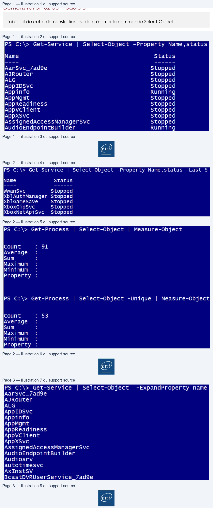

Transcription du document du Drive TSSR. La mise en forme est adaptée au Web ; les compléments IA du portail sont présentés séparément.
Initiation au Scripting avec PowerShell
Démonstration 02 du module 3
L’objectif de cette démonstration est de présenter la commande Select-Object.
La commande Select-Object permet de sélectionner des propriétés d’un ou de tous les objets renvoyés par la commande initiale. De cette façon, l’affichage du résultat sera constitué des propriétés sélectionnées. Si une commande est indiquée à la suite du Select-Object elle pourra travailler uniquement sur les propriétés sélectionnées précédemment.
•
À la suite d’une commande renvoyant un ou des objets
o Le Select va disposer les propriétés dans l’ordre souhaité par l’utilisateur.
o Il va également proposer de n’afficher qu’un certain nombre d’objets en fonction de
leur classement.
On indique avec la commande Select-Object suivie du paramètre Property les propriétés que l’on afficha dans le résultat. Lorsque l’on souhaite indiquer plusieurs propriétés, le séparateur est la virgule.
L’ordre d’affichage est fonction de l’ordre des propriétés indiqué dans la commande Select- Object.
La commande permet également de préciser un nombre d’objets.
Page 1/3
© ENI – Tous droits réservés
PS C:\> Get-Service
|
Select-Object -Property Name,status
Name
Status
AarSvc_7ad9e
Stopped
AJRouter
Stopped
ALG
Stopped
AppIDSvc
Stopped
Appinfo
Running
AppMgmt
Stopped
AppReadiness
Stopped
AppVvClient
Stopped
AppXSVC
Stopped
AssignedAccessManagersvc
Stopped
Audi oEndpointBui Ider
Running
Initiation au Scripting avec PowerShell
Le paramètre Last permet d’indiquer le nombre d’objets présent dans le résultat en commençant par la fin. L’ordre de classement est alphabétique sur la première propriété indiquée.
Le paramètre Unique regroupe les objets qui partagent une valeur de propriété identique.
Dans l’exemple d’un process, la propriété ID a une valeur commune pour plusieurs process.
Sans le paramètre Unique on obtient 91 objets dont certains ont une valeur de propriété identique.
Avec le paramètre Unique, les objets ont tous des valeurs de propriétés uniques.
Le paramètre ExpandProperty permet de ne garder que la valeur sans le nom de la propriété,
Page 2/3
© ENI – Tous droits réservés
PS C:\> Get-Service
|
Select-Object -Property Name,status -Last
5
Name
Status
WwanSvc
Stopped
Xb1AuthManager Stopped
Xb1GameSave
Stopped
XboxGipSvc
Stopped
XboxNetApiSvc
Stopped
PS C:\> Get-Process
|
Select-Object
|
Measure-Object
count
:
91
Average
:
sum.
:
Maximum
:
Minimum
:
Property
:
PS C:\> Get-Process
|
Select-Object -Unique
|
Measure-Object
Count
:
53
Average
:
sum
:
Maximum
:
Minimum
:
Property
:
E
Initiation au Scripting avec PowerShell
A l’affichage du résultat, l’en-tête de propriété n’apparaît plus dans le résultat.
Page 3/3
© ENI – Tous droits réservés
PS C:\> Get-Service
|
Select-Object
-ExpandProperty name
AarSvc_7adge
AJRouter
ALG
AppIDSvc
Appinfo
AppMgmt
AppReadiness
AppVClient
AppXSVvc
AssignedAccessManagersvc
Audi oEndpointBui
Ider
Audiosrv
autotimesvc
AXINSTSV
BcastDVRUserService_/adge
